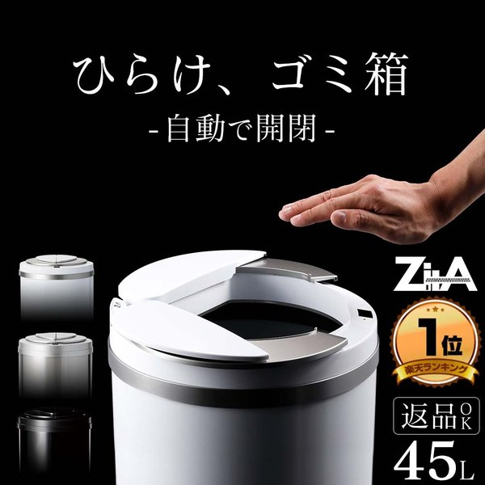
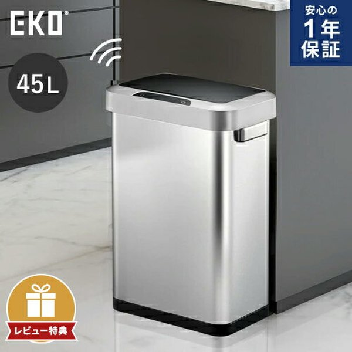
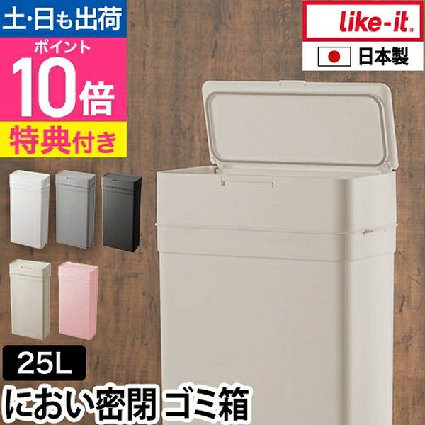
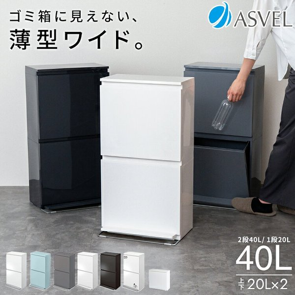
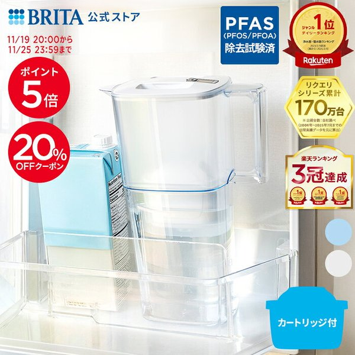
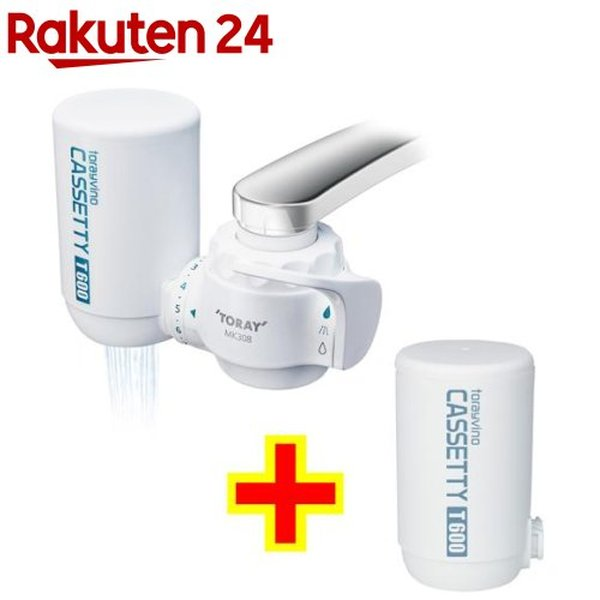
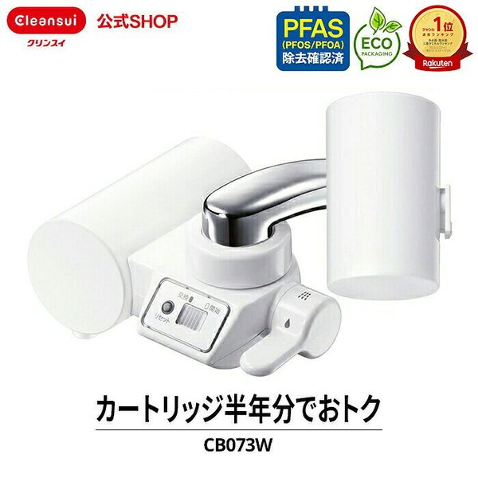
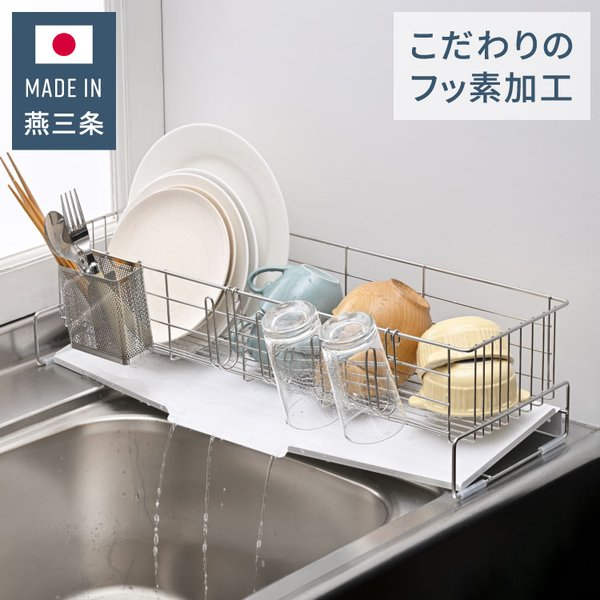
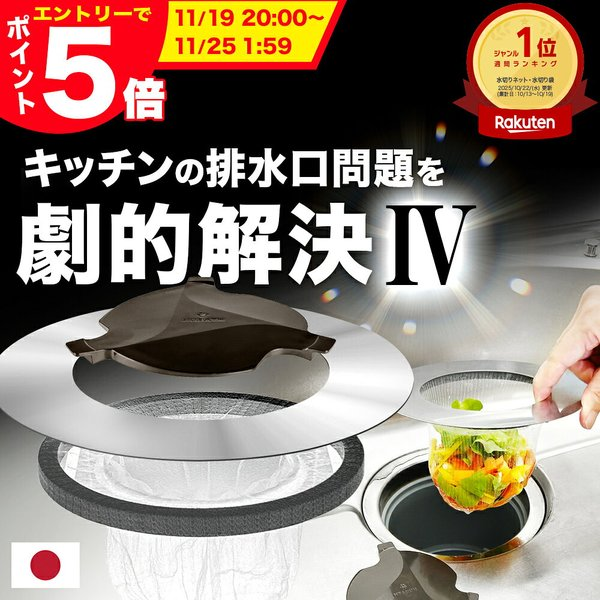
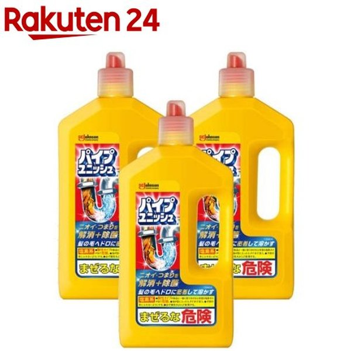

【2026年・ブラックフライデー】ゴミ箱・浄水器・水切り・シンク衛生10選｜ZitA・EKO・ライクイット・アスベル・ブリタ・トレビーノ・クリンスイ・下村企販・HUBATH・パイプユニッシュを比較
キッチンの不快感は、たいてい3か所から来ます。ゴミ箱のにおい、水道水のカルキ臭、シンクのヌメリです。どれも大きな工事は要らず、道具を替えるだけで軽くなります。
選ぶ軸は3つです。「まずゴミ箱は開けやすさと密閉性」。手をかざして開くセンサー式は、生ごみを触らずに捨てられます。「次に浄水器の形」。蛇口直結型は場所を取らず、ポット型は冷蔵庫で冷やせます。「最後にシンクまわりの手入れ」。水切りと排水口の受け皿を替えると、ヌメリのたまる場所そのものを減らせます。なお、レビュー件数が50件に満たない商品は記事内に実数を明記しています。
本記事では、楽天市場で人気・高評価のゴミ箱・浄水器・水切り・シンク衛生グッズ10選を、実売価格とレビュー評価つきで写真付き紹介します。
- おすすめ10選 スペック・特徴比較表
- BEST 1｜ZitA CIRCLE 自動開閉ゴミ箱 45L
- BEST 2｜EKO ホライゾンセンサービン 45L
- BEST 3｜ライクイット シールズ 25 密閉ダストボックス
- BEST 4｜アスベル 分別ゴミ箱 2段 40リットル
- BEST 5｜ブリタ ポット型浄水器 リクエリ マクストラプロ
- BEST 6｜東レ トレビーノ カセッティ308T 蛇口直結型
- BEST 7｜クリンスイ CB073W-WT 蛇口直結型浄水器
- BEST 8｜下村企販 フッ素加工トレーのスリム水切り DX
- BEST 9｜HUBATH キッチン マグネット排水口ネットホルダー KT180
- BEST 10｜パイプユニッシュ 排水口クリーナー 800g×3本
- 【読者負担0円】買わなくても得する無料サービス
- まとめ：ゴミ箱・浄水器・水切り10選の選び方
| 順位 | 商品名 | ブランド | 最大の特徴・おすすめ理由 | 総合評価 |
|---|---|---|---|---|
| BEST 1 | ZitA CIRCLE 自動開閉ゴミ箱 45L | ZitA（ジータ） | 手をかざすだけで開閉できる | 4.35 |
| BEST 2 | EKO ホライゾンセンサービン 45L | EKO | センサーで自動開閉する | 4.63 |
| BEST 3 | ライクイット シールズ 25 密閉ダストボックス | ライクイット（like-it） | 密閉式でにおいが漏れにくい | 4.64 |
| BEST 4 | アスベル 分別ゴミ箱 2段 40リットル | アスベル（ASVEL） | 2段で分別できる | 4.29 |
| BEST 5 | ブリタ ポット型浄水器 リクエリ マクストラプロ | ブリタ（BRITA） | 冷蔵庫のドアポケットに入るスリム形状 | 4.67 |
| BEST 6 | 東レ トレビーノ カセッティ308T 蛇口直結型 | 東レ（トレビーノ） | 蛇口直結型で場所を取らない | 4.55 |
| BEST 7 | クリンスイ CB073W-WT 蛇口直結型浄水器 | クリンスイ（Cleansui） | レバーで浄水と原水を切り替えられる | 4.57 |
| BEST 8 | 下村企販 フッ素加工トレーのスリム水切り DX | 下村企販 | 燕三条製のステンレスでさびにくい | 4.69 |
| BEST 9 | HUBATH キッチン マグネット排水口ネットホルダー KT180 | HUBATH | マグネットで貼るだけ | 4.63 |
| BEST 10 | パイプユニッシュ 排水口クリーナー 800g×3本 | ジョンソン（パイプユニッシュ） | ヌメリとにおいをまとめて落とせる | 4.66 |
ZitA CIRCLE 自動開閉ゴミ箱 45L

ZitAのCIRCLEは、手をかざすとふたが開く自動開閉のゴミ箱です。45リットルのスリムな縦型で、キッチンの作業台の横に置いても邪魔になりにくい形。ふたが閉まると中が見えないので、来客のあるリビングにも置けます。楽天市場での実売価格は約14,980円（2026年11月時点）。
- 手をかざすだけで開閉できる
- 45Lのスリムな縦型
- ふた付きで中が見えない
- 45Lちょうどの袋が合わないと中でずれるので、袋のサイズを確認する
EKO ホライゾンセンサービン 45L

EKOのホライゾンセンサービンは、ステンレス調のボディにセンサー式のふたを組み合わせた45リットルのゴミ箱です。汚れを拭き取りやすい平らな面で、キッチンの見える場所に置いても生活感が出にくいデザイン。1年保証が付いています。楽天市場での実売価格は約12,490円（2026年11月時点）。
- センサーで自動開閉する
- ステンレス調でキッチンになじむ
- 1年保証付き
- 45L用の袋が要るので、市販のレジ袋では足りない
ライクイット シールズ 25 密閉ダストボックス

ライクイットのシールズ25は、ふたの内側にパッキンが入った密閉式のダストボックスです。25リットルの容量で、おむつや生ごみのにおいを閉じ込めやすいのが特長。日本製で、同じシリーズの9.5リットルと並べて分別にも使えます。楽天市場での実売価格は約7,700円（2026年11月時点）。
- 密閉式でにおいが漏れにくい
- 日本製で作りがしっかりしている
- 9.5Lと並べて分別できる
- 密閉するぶん、ふたを開けた瞬間ににおいが広がるので、こまめに捨てる
アスベル 分別ゴミ箱 2段 40リットル

アスベルの分別ゴミ箱は、40リットルを2段に分けて使える縦型のワゴンタイプです。上段と下段で分別でき、キャスター付きなので掃除のときに動かせます。日本製で、ふた付きのため生ごみのにおいも抑えられます。楽天市場での実売価格は約4,378円（2026年11月時点）。
- 2段で分別できる
- キャスター付きで動かしやすい
- 日本製でふた付き
- 2段式は上段を開けるときに下段の前に立つ必要がある
ブリタ ポット型浄水器 リクエリ マクストラプロ

ブリタのリクエリは、冷蔵庫のドアポケットに入るスリムなポット型浄水器です。マクストラプロ カートリッジが1個付き、ろ過した水は1.15リットルまで入ります。水道水のカルキ臭が気になるときに、冷蔵庫から出してそのまま注げる手軽さがあります。楽天市場での実売価格は約4,191円（2026年11月時点）。
- 冷蔵庫のドアポケットに入るスリム形状
- カートリッジ1個付きですぐ使える
- 冷やした水をそのまま注げる
- カートリッジの交換時期を忘れると、ろ過性能が落ちる
東レ トレビーノ カセッティ308T 蛇口直結型

東レのトレビーノ カセッティ308Tは、蛇口に直接取り付ける小型の浄水器です。カートリッジが2個付き、交換用カートリッジを買い足せば長く使えます。蛇口直結型は場所を取らず、キッチンの作業スペースを狭めません。楽天市場での実売価格は約3,349円（2026年11月時点）。
- 蛇口直結型で場所を取らない
- カートリッジ2個付き
- 交換カートリッジが手に入りやすい
- 蛇口の形状によっては取り付けアダプターが必要になる
クリンスイ CB073W-WT 蛇口直結型浄水器

クリンスイのCB073Wは、コンパクトな蛇口直結型の浄水器です。カートリッジ2個付きで、浄水と原水をレバーで切り替えられます。交換用カートリッジも公式ショップでそろうので、使い続ける前提で選べます。楽天市場での実売価格は約3,630円（2026年11月時点）。
- レバーで浄水と原水を切り替えられる
- コンパクトで蛇口まわりがすっきり
- カートリッジ2個付き
- 浄水はゆっくり出るので、鍋いっぱいの水をくむには時間がかかる
下村企販 フッ素加工トレーのスリム水切り DX

下村企販のスリム水切りDXは、燕三条で作られるステンレス製の水切りラックです。トレーにフッ素加工がしてあり、水滴を拭き取りやすいのが特長。箸立てとコップ立てが付き、シンクサイドに置ける奥行きの浅い設計です。楽天市場での実売価格は約7,980円（2026年11月時点）。
- 燕三条製のステンレスでさびにくい
- フッ素加工のトレーで手入れが簡単
- 箸立て・コップ立て付き
- レビューは49件と50件に届かず、長く使った評価はこれから
HUBATH キッチン マグネット排水口ネットホルダー KT180

HUBATHのKT180は、キッチンの排水口にマグネットで貼るネットホルダーです。三角コーナーを置かずに生ごみを受けられ、ヌメリのたまりやすい隅を作りません。ネットが付属し、外して洗えるので衛生的に使えます。楽天市場での実売価格は約550円（2026年11月時点）。
- マグネットで貼るだけ
- 三角コーナーを置かなくて済む
- 外して洗える
- ステンレス以外のシンクには磁石が付かない
パイプユニッシュ 排水口クリーナー 800g×3本

パイプユニッシュは、排水口のヌメリとにおいを落とす液体タイプのパイプクリーナーです。800gの3本セットで、キッチン・洗面・お風呂の排水口に使えます。1本で数回使えるので、月に一度の掃除に回せます。楽天市場での実売価格は約1,102円（2026年11月時点）。
- ヌメリとにおいをまとめて落とせる
- 3本セットで家中の排水口に使える
- 液だれしにくい容器
- 塩素系なので酸性の洗剤と混ぜず、換気しながら使う
この記事の商品を買う前に、まずは無料で得する選択肢をチェック。どれも登録・利用は0円で、無料期間中に解約すれば料金はかかりません。読みたい雑誌がある人、ポイントを貯めたい人、アンケートなら気軽という人、それぞれに合うものを選べます。
初回31日無料・無料期間中に解約すれば0円 → 楽天ポイントモール｜登録無料で毎日ポイ活
買い物なしでもポイントが貯まる無料サービス → 楽天インサイト｜アンケートに答えてポイント
登録無料・すきま時間のアンケートで貯まる → 楽天カード｜年会費永年無料
新規発行・年会費ずっと0円 →
4つのサービスの違いと使い分けは「出費0円で得する！買わずにポイントが貯まる無料サービス厳選4選」でまとめています。
💡 まとめ：ゴミ箱・浄水器・水切り10選の選び方
ゴミ箱は、生ごみを触りたくないならZitA CIRCLEのセンサー式、においを閉じ込めたいならライクイットのシールズ25、分別を1台で済ませたいならアスベルの2段ワゴン、見た目も整えたいならEKOのホライゾンセンサービン。浄水器は、冷蔵庫で冷やしたいならブリタのリクエリ、蛇口について場所を取らないならトレビーノのカセッティ308TとクリンスイのCB073W。シンクまわりは、下村企販のスリム水切りDXとHUBATHの排水口ホルダー、月1回のパイプユニッシュで、ヌメリとにおいの発生源を減らせます。
楽天市場では「5と0のつく日」や「お買い物マラソン」などのキャンペーンに合わせて購入すると、ポイント還元が最大化してお得に手に入ります。ぜひチェックしてみてくださいね。